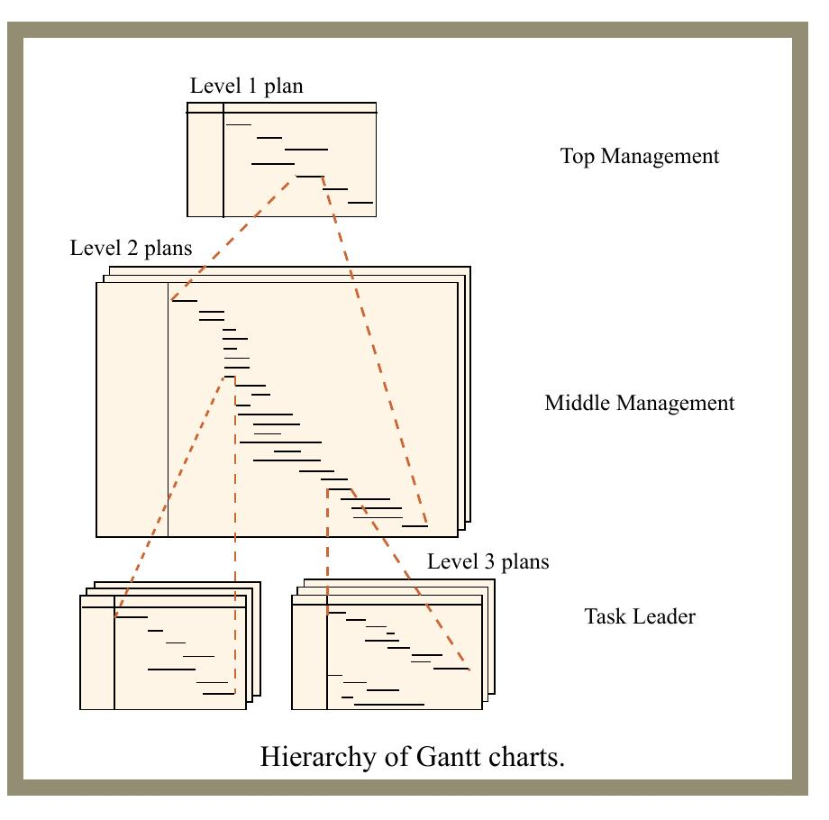

Beschreibung der Aufgabe
Phase 3 ist die abschließende Datenerhebungsübung des Semesterprojekts. In dieser Phase wählt jede Gruppe eines der beiden Projekte, die sie in Phase 2 untersucht hat, und trägt dazu umfassende Informationen zusammen. Deshalb wird ausdrücklich kein ausgearbeiteter Bericht verlangt: Abgegeben werden dürfen Papierkopien der Rohdaten in beliebiger Form – etwa Auszüge aus Projektberichten, Angeboten, Computerausdrucken, Screenshots oder Aktennotizen (siehe den Hinweis zur Vertraulichkeit in Abschnitt 8).
Wer Papierkopien einreicht, musste sie dem Professor spätestens am Mittwoch, 28. April, 13:00 Uhr übergeben (Termin des Originalkurses; das Deckblatt nennt als Abgabedatum den 28. April 2004).
Die folgenden Leitfragen (Abschnitte 2–7) sollen die Datenerhebung anleiten und ausrichten. Gesucht sind Informationen, die diese Fragen beantworten – entweder in ihrer ursprünglichen (rohen) Form oder nach einer gewissen Interpretation bzw. Analyse.
Leitfragen: Projektbewertung
- Welches waren die wichtigsten erwarteten Projektergebnisse, und welche Ressourcen wurden für nötig gehalten, um diese Nutzen zu erzielen (sozial, finanziell, strategisch)?
- Quantifizieren Sie die Nutzen (in Dollar oder als Nutzwert), sofern möglich.
- Welche Aktivitäten wurden unternommen, um das Projekt zu bewerten?
- Falls sich die wahrgenommenen Nutzen im Projektverlauf änderten: Wie und warum änderten sie sich?
- Wie realistisch und relevant waren die Projektziele?
- Was hat sich durch das Projekt verändert?
- Gibt es kostengünstigere Wege, die Projektziele zu erreichen?
- Machbarkeitsanalyse (Feasibility Analysis).
- Entwickeln Sie Erfolgsindikatoren und deren Messgrößen.
- Identifizieren Sie Technologie-, Kosten- und Terminrisiken.
- Identifizieren Sie Umweltfaktoren und -risiken.
- Hinterfragen Sie kritisch mögliche Risiko- und Nutzenpuffer sowie Quellen von Flexibilität.
Leitfragen: Projektorganisation
- Vertragliche Vereinbarungen mit Generalunternehmern, Lieferanten, Nachunternehmern und anderen internen Organisationen.
- Anforderungen an die Projektorganisation und deren Auswahlprozess.
- Organisationstyp. Beziehen Sie ggf. externe Organisationen ein – etwa Auftraggeber, Fokusgruppen, Berater und Forschungsgruppen –, die mit den Hauptorganisationen interagierten; nennen Sie dabei auch Häufigkeit, Art und Begründung der Interaktionen.
- Prozess, mit dem die Organisationsstruktur geformt wurde.
- Organisationsstrukturplan (Organizational Breakdown Structure, OBS).
- Personalmanagement und Personalzufluss in das Projekt.
- Projektstrukturplan (Work Breakdown Structure, WBS).
- Führungsstil und Machtquellen im Projekt.
- Verantwortlichkeitsmatrix (Linear Responsibility Chart) für die Personen und Aufgaben des Projekts.
- Führungsspanne (Span of Control) jeder Führungskraft im Projekt.
- Beurteilungsmaßstäbe und Anreizsystem für die Projektmitglieder.
Leitfragen: Projektplanung
- Ursprünglich geschätzte Kosten und Kostenstrukturplan (Cost Breakdown Structure, CBS).
- Gab es vor Projektbeginn einen Projektplan?
- Methode der Budgetaufstellung (z. B. Top-down, Bottom-up oder kombiniert).
- Ursprüngliche Aufwandsschätzung (z. B. Personenstunden, Anzahl der Planzeichnungen).
- Ursprünglich geschätzter Fertigstellungstermin.
- Ursprünglicher Terminplan (siehe den Hinweis zum Projektplan in Abschnitt 8).
- Lebenszyklusanalyse für das System sowie alle darauf gestützten Entscheidungen oder Analysen (z. B. Kostenschätzungen, Fortschreibungen über die Zeit).
- Ressourcenprofil über die Projektlaufzeit, einschließlich Angaben zu direkten und indirekten Kosten.
- Informationsquellen für Schätzung und Planung.
- Lernaspekte im Projekt.
- Beschreibung deterministischer oder stochastischer Schätzverfahren.
- Kritikalitätsindizes für Vorgänge oder Pfade nach ABC-Kategorien.
- Geplante Unterbrechungs- und Wiederanlaufbedingungen für Vorgänge (Vorgangssplittung).
- Verfahren zur Vorgangsaggregation (z. B. über Sammelvorgänge/„Hammock Activities“, Meilensteine, WBS, OBS oder Geldbeträge).
- Technische, prozedurale oder auferlegte Anordnungsbeziehungen bzw. Randbedingungen, die als treibende Faktoren galten.
- Vorlauf (Lead) oder Verzug (Lag) in wichtigen Anordnungsbeziehungen wie Normalfolge (FS), Anfangsfolge (SS), Sprungfolge (SF) und Endfolge (FF).
- Beschreibung eingesetzter Projektsimulationstechniken (falls vorhanden).
- Beschreibung bekannter Schleifen (Rückkopplungen) in Vorgängen oder sehr erratischer Vorgänge mit Nacharbeit und Änderungen.
- Überlappende Ausführung oder Concurrent Engineering im Projekt, einschließlich der Auswirkungen des Arbeitsfortschritts und der Sensitivität gegenüber vor- und nachgelagerten Vorgängen.
Leitfragen: Projektüberwachung
- Review-Prozesse: Art der Reviews, Häufigkeit, Format, beteiligtes Personal, Ergebnisse und Nachverfolgung.
- Earned-Value-Analyse (Fertigstellungswertanalyse): Häufigkeit und darauf gestützte Entscheidungen.
- Strategie zur Überwachung von Puffern und/oder Pufferzeiten (Float).
- Methoden der Abweichungsverfolgung (Variance Tracking).
- Auswirkungen anderer Projekte auf Ressourcen, Zeit oder Technologie.
- Beschreibung der verwendeten Leistungskennzahlen. Beurteilen Sie deren Nützlichkeit und suchen Sie nach Korrelationen zwischen den Kennzahlenwerten und dem Erfolg oder Misserfolg des Projekts.
- Beschreibung der im Programm eingesetzten Risikomanagementtechniken. Diskutieren Sie den „Return on Investment“ zwischen dem Aufwand für diese Techniken und dem Nutzen des Risikoprogramms.
- Wie wurde die technische Baseline (Referenzkonfiguration) gemanagt?
- Direkte Kosten zusätzlicher Arbeiten und/oder von Änderungen an Leistungsumfang oder Programm.
- Arten von Konflikten im Projekt und deren Veränderung über die Zeit.
Leitfragen: Projektsteuerung
- Prozess der Entscheidungsfindung in Gremien.
- Einsatz und Wirksamkeit von Gremien (Committees).
- Beschreibung etwaiger Reorganisationen während des Projekts und ihrer Gründe (z. B. Arbeitsänderungen oder Projektentwicklung).
- Beschreibung der im Projekt verwendeten Methoden zur Klassifizierung, Analyse und Behandlung von Verzögerungen sowie zur Zuweisung der Verantwortung dafür – für die Hauptorganisation, Auftraggeber, Nachunternehmer und Berater.
Leitfragen: Lernen nach Projektabschluss
- Endgültige oder prognostizierte tatsächliche Projektkosten.
- Endgültiger oder prognostizierter Fertigstellungstermin.
- Tatsächlich erforderlicher Aufwand (z. B. Personenstunden/-tage/-wochen/-monate und Anzahl der Planzeichnungen), bisher oder prognostiziert.
- Anteil des Gesamtaufwands, der auf Nacharbeit entfiel (bisher oder prognostiziert).
- Welcher Anteil der Produktivitäts- und/oder Qualitätseinbußen gegenüber dem Optimum im Projektverlauf war zurückzuführen auf:
- die Qualität vorangegangener Arbeit (innerhalb derselben Phase)?
- Verfügbarkeit und/oder Qualität der Arbeit aus anderen Phasen?
- Verfügbarkeit und/oder Qualität der Arbeit von Herstellern, Lieferanten und Nachunternehmern?
- Verwässerung von Qualifikation und Erfahrung im Team?
- Arbeit außerhalb der geplanten Reihenfolge?
- Termindruck?
- Arbeitsmoral?
- Ermüdung durch Überstunden?
- Änderungen des Leistungsumfangs?
- vom Bauherrn veranlasste Änderungen? vom Auftragnehmer veranlasste Änderungen? vom Planer veranlasste Änderungen?
- Sonstiges?
- Verhältnis der Anzahl der Überarbeitungen zur ursprünglichen Arbeit.
- Schlüsselfaktoren, die zu Erfolgen und Misserfolgen des Projekts beitrugen.
- Identifizieren Sie einen Bereich, in dem ein Modell für eine unsichere oder problematische Aufgabe hätte entwickelt werden können.
- Beschreiben Sie sich über die Zeit oder an verschiedenen Orten wiederholende Arbeiten, auf die das Line-of-Balance-Verfahren (Linienplantechnik für Wiederholarbeiten) hätte angewendet werden können.
Liefern Sie außerdem eine Beschreibung und Analyse des Projekts aus folgender Perspektive: Wie hätten Sie das Projekt verbessern können, um einige der aufgetretenen Probleme zu vermeiden und die erzielten Erfolge zu verstärken?
Hinweise: Datenerhebung, Vertraulichkeit, Detailtiefe
Hinweise zur Datenerhebung
- Beschaffen Sie Informationen für die wesentlichen Arbeitsphasen oder Vorgänge, wo dies relevant und möglich ist.
- Nutzen Sie Interviews und/oder fundierte Schätzungen, wo harte Daten nicht ohne Weiteres verfügbar sind.
- Überlegen Sie, welche Informationen man über das Projekt wissen möchte. Beschreiben Sie eine Situation, die interessant, herausfordernd oder einzigartig ist. Identifizieren Sie eine Hauptperson (einen „Protagonisten“), die diese Situation bewältigt. Beschreiben Sie, was geschehen ist und was der Protagonist in dieser Situation hätte tun können. Identifizieren Sie mindestens eine Situation, einen Protagonisten und eine Lösung für jedes Hauptgebiet: Bewertung, Organisation, Planung, Überwachung, Steuerung und Lernen.
Hinweis zur Vertraulichkeit
Enthält das untersuchte Projekt proprietäre oder sonstige sensible Informationen, sind diese so zu schützen, wie es die Projektleitung des Projekts verlangt. Mögliche Alternativen: Skalieren Sie die Daten so, dass sie im relativen Sinne äquivalent sind, oder verwenden Sie Prozentwerte ohne Basiszahl.
Hinweis zum Projektplan (Detailtiefe)
Bei der Entwicklung bzw. Beschreibung des Projekts sind Gesamtanalyse und Darstellung auf die Ebenen 1 und 2 der in der Abbildung gezeigten Planhierarchie zu beschränken. Auf Ebene 3 (tiefere Analyse, größerer Detailgrad) soll nur bei Themen erweitert werden, die ein hohes Maß an Unsicherheit enthielten (oder erwarten lassen) oder besonders herausfordernd bzw. wichtig waren (oder sein dürften) – damit die Person, die das Material prüft, ein gutes Gespür für die Details und deren Bezug zum Gesamtprojekt bekommt.
